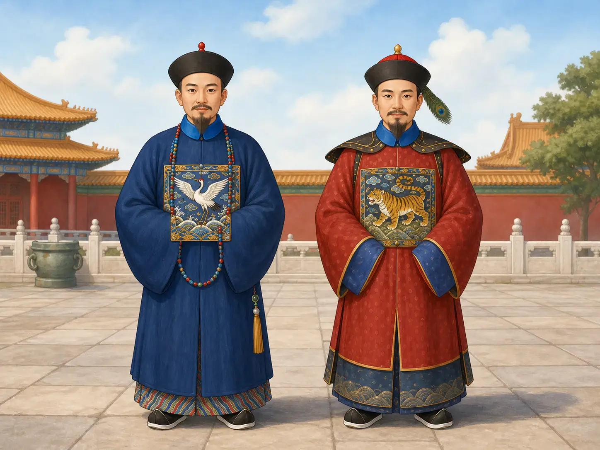
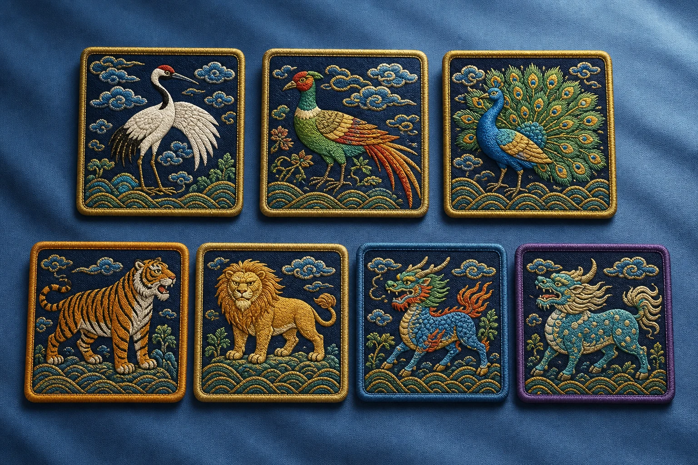
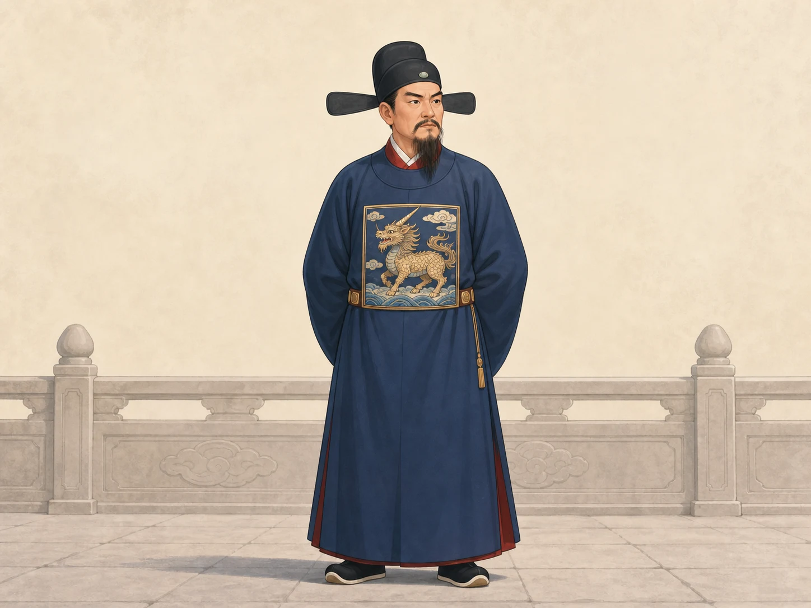

只看一只鸟，能认出官职吗？
Can One Bird Reveal an Official's Rank?
阅读难度 · 中等Reading level · Medium
Page 1
服饰侦探的第一条线索
A Clothing Detective's First Clue

A modern composite using Qing-style hats, court beads, and rank-badge clothing. Cranes were linked to civil rank and tigers to military rank, but this is not a historical portrait.
假如博物馆桌上放着一块方形织物，中间有一只白鹤，四周是云、海水和山石。标签被遮住了。你能不能只看这只鸟，就说出原来的主人是谁？
第一条线索是“补子”。明清两代，一些文武官员在规定的官服前胸和后背使用带动物纹样的方形标志，用来显示文武类别和品级。文官通常用飞禽，武官通常用走兽或神兽。因此，一只鹤会让侦探先往文官方向猜；一只虎则更可能指向武官。可是“鸟等于文官、兽等于武官”只是开头，不是完整答案。
首先，并不是中国所有朝代的官员都这样穿，也不是所有方形刺绣都是官员补子。明代在十四世纪末建立了醒目的补服制度，清代继续使用，却改变了衣服形制和部分动物对应。其次，补子告诉人们的是品级，不是一个唯一职位。几个不同衙门里的官员可能同为三品；同一个人在任职、升降之后，补子也可能更换。所以，只凭一只鸟，你最多找到身份范围，还认不出姓名、具体工作，更看不出他是否有本事。
Imagine that a museum places a square textile on a table. A white crane stands in the center, surrounded by clouds, waves, and rocks. The label is covered. Can you identify its original owner from that bird alone?
Your first clue is the buzi, or rank badge. During the Ming and Qing dynasties, some civil and military officials wore square animal badges on the front and back of regulated official clothing. The picture showed the branch of service and the wearer's rank. Civil officials usually had birds, while military officers usually had four-legged animals or mythical beasts. A crane therefore points the detective toward a civil official; a tiger points toward a military officer. But “birds for civil, beasts for military” is only the beginning of the answer.
Not every Chinese dynasty used this system, and not every square embroidery was an official badge. The Ming court established a striking rank-badge system in the late fourteenth century. The Qing court continued it but changed the clothing and some of the animal assignments. A badge also showed rank, not one exact job. Officials in different offices could share the same rank, and a person's badge could change after a promotion or demotion. One bird might narrow the search, but it cannot reveal a name, a precise job, or whether the wearer was actually good at it.
Page 2
同一只老虎，两个答案
One Tiger, Two Answers

A modern concept image, not a real Ming or Qing rank chart. Cranes, pheasants, peacocks, tigers, lions, qilin, and xiezhi appeared on badges, but their dates and uses differed; this lineup is not a rank order.
真正的难题藏在时间里。清代文官补子在制度逐渐固定以后，一品常用仙鹤，二品锦鸡，三品孔雀，四品云雁；再往下还有白鹇、鹭鸶、鸂鶒、鹌鹑和练雀等。清代武官的高品级常见一品麒麟、二品狮、三品豹、四品虎。动物不是官员挑自己最喜欢的来绣，而是朝廷用服饰规定把等级变成人人看得见的秩序。
可是，把这张清代对应表套回明代就会出错。纽约大都会艺术博物馆收藏的一件虎纹补子正好说明这一点：虎在明代制度中可表示三品武官，到了清代则表示四品武官。明初的某些规定还把两个品级放在同一组，可选的鸟兽并不像后来的表格那样一格只放一种。规定会修订，实际穿着也不总是整整齐齐地照着纸面执行。
因此，服饰侦探不能先背一张九品表，再把答案贴到所有实物上。要先问：这是明代还是清代？是早期还是晚期？动物到底是什么？制作方法和周围纹样像哪个时期？博物馆有时也要把织物、出土地点、旧照片、肖像和文献放在一起，才能给一块补子判断年代。认错一只长尾鸟，就可能把官员连降好几级；认对了动物却用错朝代，答案还是会错。
The real puzzle is hidden in time. After the Qing rules became more settled, civil badges commonly used a crane for first rank, a golden pheasant for second, a peacock for third, and a wild goose for fourth. Lower ranks used birds including the silver pheasant, egret, Mandarin duck, quail, and paradise flycatcher. Among high Qing military ranks, the first used a qilin, the second a lion, the third a leopard, and the fourth a tiger. Officials were not free to pick a favorite animal. Court dress rules turned rank into a visible order.
But a Qing chart cannot simply be pasted onto the Ming dynasty. A tiger badge at the Metropolitan Museum of Art shows why: the tiger could mark a third-rank military officer in the Ming system but a fourth-rank officer in the Qing. Some early Ming regulations also grouped two ranks together, with choices that were not yet the neat one-animal-per-box list seen later. Rules changed, and real people did not always follow written regulations perfectly.
A clothing detective should not memorize one nine-rank chart and attach it to every textile. Ask first: Ming or Qing? Early or late? What species is the animal? Do the weaving method and surrounding designs fit the proposed date? Museums may compare the cloth with excavated objects, old portraits, photographs, and written rules before dating a badge. Mistake one long-tailed bird for another and the official may drop several ranks. Identify the animal correctly but use the wrong dynasty, and the answer can still be wrong.
Page 3
前面为什么裂成两半？
Why Is the Front Badge Split in Two?

This modern imagined xiezhi robe borrows Ming-style elements. Excavated Ming xiezhi robes do survive, but this picture is not one of those objects and does not show a known official's face.
把补子翻过来，衣服本身也会说话。明代官员的常服可以是圆领大袍，前胸和后背各有补子。中国丝绸博物馆修复过一件明墓出土的獬豸补圆领袍：圆领、右衽、宽摆、大袖，前后都有金线做成的獬豸纹样。这是考古出土的衣服，不是画家根据故事补出来的“古装”。
清代补服的外套多为前中开合的对襟褂。为了让衣襟打开，前胸补子通常也从中间分成左右两片；后背不需要开襟，仍是一整块。前后补子往往成对制作，图案相配。清代的补子一般也比许多明代实例小，纹样里常见一只动物朝向象征皇帝的日形圆盘。后期还出现了便于更换等级图案的做法。于是，一块从中间整齐分开的补子可能不是损坏，而是本来就缝在衣服正面。
这些衣服用于有规定的公务或礼仪场合，不等于官员从早到晚只穿这一套。明代的常服、公服，清代的朝服、吉服、常服等名称各有搭配和使用规则，不能全翻成同一种“formal robe”。看一幅肖像时，还要问画家画的是哪一种场合；看一件孤零零的补子时，也要记得它原来只是整套帽子、袍褂、腰带或朝珠中的一部分。
Turn the badge over, and the clothing itself begins to talk. A Ming official's regular official robe could be a wide, round-collared garment with a badge at the chest and another at the back. The China National Silk Museum helped conserve a xiezhi-badge robe excavated from a Ming tomb. It has a round collar, a closing that crosses to the right, broad sleeves, and gold-thread xiezhi designs on front and back. This is an excavated garment, not a costume that an artist invented from a legend.
In the Qing dynasty, the rank-badge surcoat usually opened down the center. To let the coat open, the front badge was commonly divided into left and right halves. The back badge could remain whole. Front and back badges were often made as a matching pair. Qing badges were also generally smaller than many Ming examples, and their designs often show one creature looking toward a sun disk that represented the emperor. Later makers even developed ways to replace a rank image more quickly. A badge neatly split down the center may not be damaged at all - it may have belonged on the front of a coat.
These clothes were worn for regulated government or ceremonial occasions; an official did not necessarily wear the same outfit from morning to night. Ming categories such as changfu and gongfu, and Qing categories for court, festival, regular, travel, and other dress, each had their own combinations and rules. They should not all be flattened into one English phrase such as “formal robe.” In a portrait, ask what occasion the painter is showing. When you see a badge by itself, remember that it was once only one part of a complete outfit that might also include a hat, robe, belt, or court beads.
Page 4
獬豸能证明一个人公正吗？
Could a Xiezhi Prove Someone Was Fair?
獬豸让这个侦探游戏多了一道岔路。它是传说中能辨曲直的神兽，明清一些监察和司法系统的官员用它作补子。它不在普通文官九品鸟类表里，所以看见獬豸，侦探要改问：“这个人是否在都察院、按察系统或其他风宪职位任职？”不过，明代獬豸补服的适用范围在制度和实践中并非始终完全一致，清代也曾专门限制某些低级办事人员冒用。即使认出獬豸，也要继续查职位和年代。
更重要的是，獬豸只说明朝廷赋予某个职位的象征，不是对穿衣人的品德鉴定。鹤不会自动使文官有学问，虎不会证明武官勇敢，獬豸也不能保证监察官一定公正。补子让等级社会中的位置变得可见，却把真实的人压缩成一个制度符号。历史研究要同时看规则和现实：衣服说了什么，人又究竟做了什么？那是两种不同的证据。
The xiezhi adds a fork to the investigation. This mythical creature was said to recognize right from wrong, and some Ming and Qing officials in censorial or judicial systems used it on their badges. It does not belong to the ordinary nine-rank list of civil-service birds. When a detective sees a xiezhi, the next question becomes, “Did this person work in the Censorate, a provincial surveillance office, or another related post?” Even then, Ming rules and actual practice did not always define the group in exactly the same way. Qing officials also had to restrict some lower staff members from using the badge improperly. The animal is a lead, not a finished identification.
More importantly, the xiezhi tells us what the government wanted an office to symbolize. It is not a character test for the person wearing it. A crane did not automatically make a civil official wise. A tiger did not prove that a military officer was brave. A xiezhi could not guarantee that a censor was fair. Rank badges made a person's place in a hierarchical government visible, but they reduced a complicated human being to an official symbol. Historians must ask two separate questions: What did the clothing claim, and what did the person actually do?
侦探的完整答案
The Detective's Full Answer
回到桌上那只白鹤。现在你可以说：“它很可能与明清文官品级有关；如果能确认是清代定制中的仙鹤补子，才可以进一步判断一品。但我还需要看年代、前后结构、织绣方法和来源记录，不能只凭鸟下结论。”
这听起来没有“一眼认出”那么神奇，却是真正厉害的观察。好的历史侦探不抢着猜，而是知道一块方布能告诉我们什么，也知道它不能告诉我们什么。
Return to the white crane on the table. Now you can say, “It probably relates to a Ming or Qing civil rank. If the evidence shows that it is a crane badge from the settled Qing system, then it may indicate first rank. But I still need its date, construction, weaving or embroidery, and collection history. The bird alone is not enough.”
That answer may sound less magical than instant recognition, but it shows much stronger observation. A good history detective does not rush to guess. The detective knows what one square of cloth can tell us - and what it cannot.